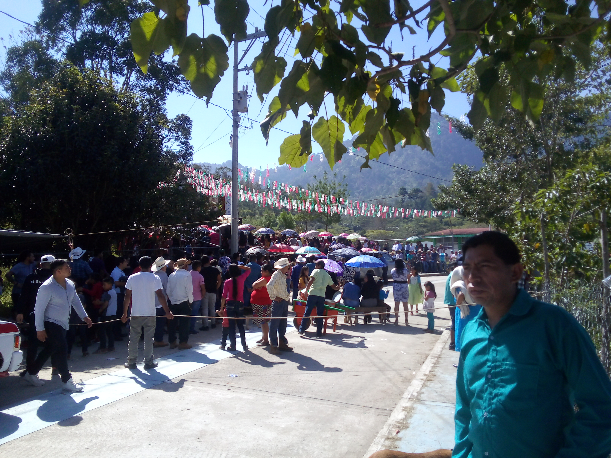

CONTACTO:+52 919 100 5435
Costumbres y tradiciones regionales.
Contenido:

En esta seccion tratamos temas sobre costumbres y tradicion de la localidad de San Isidro las Banderas Pantepec Chiapas,una cultura zoque.


GASTRONOMIA.

Los alimentos que se preparan son:atol agrio,pinol,polvillo,tamalito de frijol y mole.
Regresar al temario de esta pagina.24 de marzo del 2023
Fiesta patronal.
La feria patronal se realiza del 13 al 16 de mayo,lo cual inicia con la entrada de compania,entrada de flores;la compania consiste en recibir imagenes religiosas de otras localidades o municipios que vienen de visita.
El 14 de mayo se recibe la pregrinacion y en por las noches la quema de castillo y baile en en el centro de la localidad.
 Regresar al temario de esta pagina.
Regresar al temario de esta pagina.


Si tienes dudas dejanos tus comentarios y en cuanto podamos con gusto responderemos tus inquietudes.